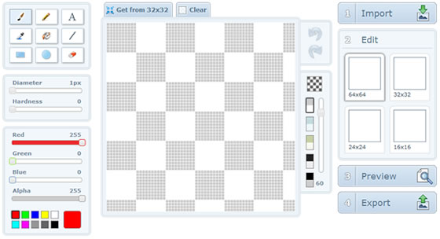
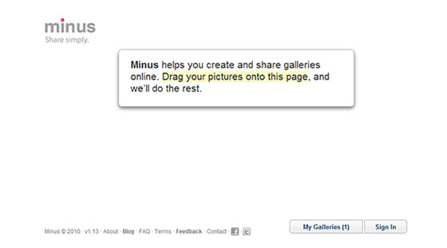

作者 陈达 发布于 2010年12月20日 上午12时0分
http://www.infoq.com/cn/articles/cd-html5-knock-door
偶然一次拿起 Amazon Kindle DX，面对着大屏幕，习惯性地用手指划动屏幕试图翻页失败后，猛然发现自己的操作习惯已经被改变。对着大屏幕的掌上设备，已经习惯了触摸，习惯了这种便 利。让我想起了"技术驱动生活，技术改变生活"这句话。这是一个最平常不过的技术改变生活的例子。技术有很多种，改变生活的例子也数不胜数。而今天我将以 一个前端开发工程师（以下简称：前端）的角度，说说 HTML5给我们带来的改变和使用HTML5所需要注意的点。
从目前的状况来说，HTML5很流行。Google在推，Microsoft在推，很多大公司已经尝试在用，但依然没有大规模的商业应用。原因大概 可以归结为两点，一是HTML5本身对于技术人员来说还比较新；一是占据市场最大份额的IE（IE9 Beta 已经支持了相当多的HTML5技术）对大部分HTML5特性并不支持，其他浏览器的支持也并不全面。
现今的互联网，大部分信息与服务都不再是一家独有，当大家都能提供相同的服务时，体验更好的将会被选择。用户选择了你，信任了你，才可能养活你。所 以很多时候，企业要做的是，提升自己产品的体验，留住用户，让他们离不开，让他们掏了腰包依然觉得物有所值。当然，如果能让用户感受到物超所值就更好了。
企业期望着自己的产品更具竞争力；而作为技术人员，我们希望能把产品做得更完美。在拼用户体验的关键时刻，HTML5应景而生，敲响了我们的大门。它从性能、速度和操作的交互模式上，都给我们带来了全新的体验。我们想利用它。
对于HTML5的好，我相信你已经从很多地方看到。这里，我的重点会放在如何应对这个新事物上。可能讲的大部分都是前端应该做些什么，如何去做的事，但这也是在对所有希望提升自己产品的人说的。
从某种程度上来说，HTML5 并不是完全新生的技术。而是一个版本的升级，只是这次升级给我们带来了更多的东西。虽然这些东西大部分都还是一份草案，但浏览器厂商非常看重，都纷纷在竞 争着去实现。而无论它是否草案，浏览器的支持，给了我们去做更好产品的机会。那么，去尝试吧。而作为前端，我们需要做的，能做到的有哪些呢？
对于新的标签的写法，按照是HTML4 和 XHTML1 的习惯，我们已经可以猜到怎么写。而具体的使用，根据 HTML5 设计原理所遵循的伯斯塔尔法则（Postel's Law），"发送时要保守，接收时要开放"，我们可以很好地理解。比如 <video /> 标签，设计时严格限定 <video /> 标签才是视频播放的标签，但接收的时候，可以有多种格式的 source:
<video>
<source src="movie.mp4">
<source src="movie.ogv">
<object data="movie.swf">
<a href="movie.mp4">download</a>
</object>
</video>
上文所述的改变，要学习，对我们的挑战并不大。HTML5 提供了各种新的 API、新特性，才才是学习的难点所在。比如 Canvas，要做好一个好的 Canvas 3D 应用，不止需要有编程的能力，还需要有图形学方面的知识。又比如Web SQL Database，还需要前端学会处理数据库。当然，HTML5 的技术远远不止这些，并且很多新技术都还没有人给出相应应用的实现方式，以及最佳实践。学习起来还是有一定难度的。另外，HTML5 在一些浏览器是完全不支持的，比如 IE6、IE7（当然，拖放--Drag and Drop 微软本来就有了），这时要去做所有的折衷方案可能比较难，所以，如何去权衡优雅降级也是一个难题。但，想把一个产品做得完美，或者只是想把一件事做得完 美，又有什么事是容易的呢？
（1）创新才能让技术真正改变我们的生活
我们面临的最大挑战应该是创新。他不像已有的很多技术，已经有很多实例给我们看，甚至把源代码都开放出来。这就需要我们去了解用户的需求，大胆去为用户想，创造出更便利的体验。比如 X-icon Editor：http://www.xiconeditor.com/，利用 Canvas 实现了一个与桌面程序一样的图片编辑器：

http://www.infoq.com/resource/articles/cd-html5-knock-door/zh/resources/image1.bmp
又如 Minus: http://min.us利用 File API 和 Drag and Drop 特性，实现了拖放上传的新体验：

http://www.infoq.com/resource/articles/cd-html5-knock-door/zh/resources/image2.bmp
这些创新。虽然在桌面软件上不算新鲜，但在 Web Application 上，都是新东西，是需要我们去实现的。而在最初，最直接的"创新"方式可能我们会是把更多桌面应用程序的好体验搬到 Web 上来。其实，这是非常不错的一种方案。因为很多人都习惯了桌面程序，如果 Web 提供了相应的功能，对于操作的方法，他们很快就会上手。这对于用户来说，减少了学习成本。轻松上手也是良好体验的一种。
（2）安全是我们应该时刻记住的
记得有一次我在使用 Google Docs 写一篇文档的时候，浏览器突然崩溃了。当时，就习惯性地想，如果 Google Docs 支持 LocalStorage（本地存储） 的话，那么，我下次打开，内容一定不会丢失。但仔细想想：
那么这时，一定不适合用 LocalStorage 这种技术，而应该用 Ajax 自动保存。因为这本东西是内部（对外保密）的文档，如果用户是在公共电脑上使用，可能会造成涉密。相应的，像我们使用 Web SQL Database 这种客户端的数据储存，就更需要有安全意识了。哪些是可以用的，哪些是不可以用的，应该要做好规划和检查。不要让简单的 localStorage.setItem 暴露了用户的隐私。
当然，可能会有人说这是一种设计的不严谨。我想，这种出发点是好的。技术本身本来就是中立的，它只要提供更多方便、灵活的特性给我们，而具体如何去正确运用，应该是作为程序员应该去思考的。
（3）规范需要统一
Jeremy Keith 在 Fronteers 2010 上说的 HTML5 设计原理告诉我们，HTML5 最大的一个特点是: 兼容。比如 <input type=alipay> 和 <input type="alipay"> 这样的标签的合格的，写属性的时候可以不用引号， 标签可以自闭合也可以不闭合。而在结构上，甚至可以写这样的标签：
<a href="/path/to/resource">
<h2>Headline text</h2>
<p>Paragraph text.</p>
</a>
这对于写惯了 XHTML 的我们，可能很难接受。但程序这样设计了，它也给我们带来了更多的灵活，虽然与我们已有的风格有所冲突。我们当然希望可以按照这些灵感，用自己的风格去编 码，但团队合作最忌的就是没有统一的风格，这会阻碍我们前进的步伐。因此，面对 HTML 5，我们需要一套规范，来让我们的团队更好地进行协作，而不是阻碍协作。
作为对HTML5 最了解的一群人。前端应该负责去推动这样的技术应用。当然，并不是说只有前端才希望产品有更好的体验，而更多的是因为，只我们了解。想要应用新的技术，创 建新的体验。只有执行的这群人了解了相应的，才有可能用上。对于交互设计师、视觉设计师和后端（服务端）工程师，还需要我们去告诉他们。而这也是我们的职 责所在。
比如，你要告诉交互设计师，现在 Web 上 Drag and Drop 的支持比较好了，可以设计一些这方面的交互方式；你要去告诉视觉设计师，Drag and Drop 的事件过程，让他们像知道 a:hover 一样，会给你设计出鼠标经过时的样式；你还要去告诉后端工程师，其实 cookie 有时候已经用不了上，因为在IE我们可以用 userData，而其他的可以用 LocalStorage 来实现 ，这样可以不在 Header 中传送，页面将会更快。
需要我们前端去做的，除了去学习，去做，就是去告诉他们有哪些新东西，甚至让他们也学习一点这方面的知识。只有他们了解了这些，将产品设计和前后端技术配合起来，对产品才可能有质的提升。
其实这一切，所有的新技术。都是为了更美好的生活而做的。HTML5 也是。或许某天我们再也不需要写像引用 flash 这样晦涩的代码了，而只要写像 <video src="movie.mp4" /> 这样简单的标签。
<object classid="clsid:D27CDB6E-AE6D-11cf-96B8-444553540000"
codebase="http://download.macromedia.com/pub/shockwave/cabs/flash/swflash.cab#version=6,0,40,0" WIDTH="100%" HEIGHT="100%" id="someflash">
<param name="movie" value="someflash.swf" />
<param name="quality" value="high" />
<param name="wmode" value="transparent" />
<embed src="someflash.swf" quality="high" wmode="transparent" width="100%"
height="100%" name="someflash" align=""
type="application/x-shockwave-flash"
luginspage="http://www.macromedia.com/go/getflashplayer"></embed>
</object>
所以，我们应该以更开放的心态去接纳。像伯斯塔尔法则（Postel's Law）所说的：发送时要保守，接收时要开放。当 HTML5 来敲门，我们应该用更开放的心去接纳，用更严谨的态度来编码。
林建锋（sofish），目前供职于支付宝，前端架构组成员。主要负责支付宝样式库的构建，致力于样式兼容研究、新技术研究，以及样式框架的开发。个人网站：http://sofish.de。
另外，感谢淘宝网小马（赵泽欣）、支付宝么么茶（吴振昊）对InfoQ中文站的大力支持。